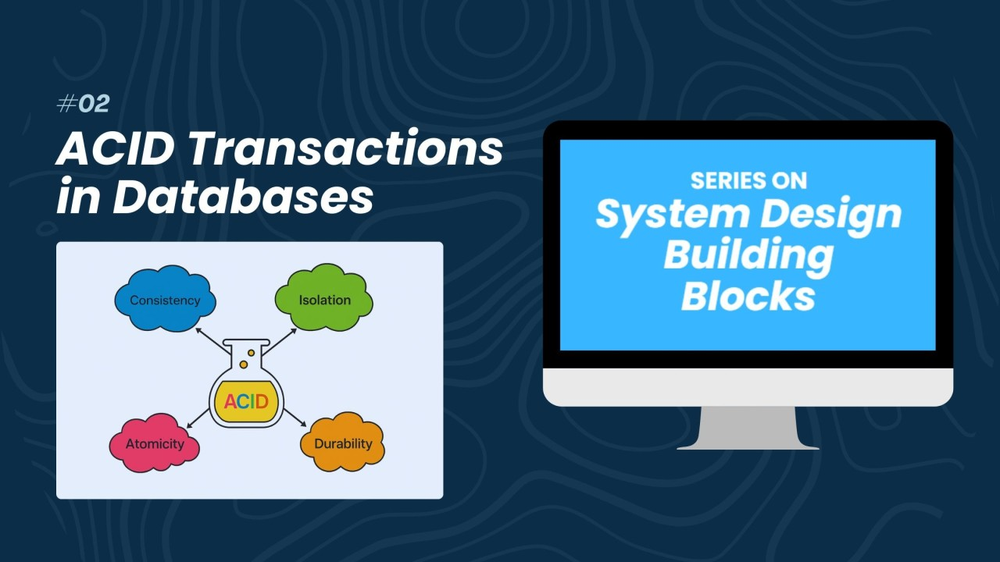

ACID Transactions in Databases: Explained with Examples
Ashmita Pandey · · Databases

Hi everyone, I'm Ashmita 👋
Imagine you're managing a ride-booking application
A user books a ride. Your system must match them with a nearby driver, reserve the fare estimate, update the driver's availability, and notify both parties, all within a few seconds.
But what if the driver cancels after being assigned, or your service crashes midway through this process?
This is where ACID transactions come into play. They ensure that all steps of such operations happen reliably and consistently or not at all.
ACID stands for four essential properties of a reliable transaction:
- Atomicity
- Consistency
- Isolation
- Durability
Let us explore each one with examples and implementation details.
What is a Database Transaction?
A transaction is a sequence of one or more operations, such as inserts, updates, or deletes, treated as a single logical unit of work. It either completes entirely or does not happen at all. There is no partial success.
Example: Ride Assignment
A user books a ride
- A driver is assigned
- Estimated fare is calculated
- Driver's status is set to "busy"
- Notifications are triggered
If any step fails, the system must roll back everything to prevent inconsistencies.
Without transactions, you may encounter issues such as
- A driver shown as busy without any ride actually assigned
- A user being charged even though no ride was successfully booked
ACID transactions are designed to prevent such inconsistencies.
1. Atomicity
Atomicity ensures that a transaction is all or nothing. If any step in the process fails, the entire transaction is rolled back, leaving the system unchanged.
Example:
Assigning a driver and updating their availability must both succeed. If assigning fails, the availability should not be updated either.
Implementation:
- Write-Ahead Logs (WAL): All operations are recorded before they are executed. In case of failure, the log can be used to roll back the operations
- BEGIN, COMMIT, and ROLLBACK Protocols: A transaction starts with BEGIN. If all steps are successful, COMMIT saves the changes. If any step fails, ROLLBACK reverts them
2. Consistency
Consistency ensures that a transaction moves the database from one valid state to another. It preserves all integrity rules defined in the schema.
Example:
A driver who is already on a trip should not be assigned to another ride. If the rule enforces driver_status = available, violating it should cancel the transaction.
Implementation:
- Schema Constraints: Includes NOT NULL, CHECK, UNIQUE, PRIMARY KEY, and FOREIGN KEY
- Stored Procedures and Triggers: Logic that validates business rules before data is committed
- Application Layer Validations: Validations done in the application before sending data to the database
3. Isolation
Isolation ensures that multiple transactions can occur simultaneously without interfering with each other. It makes each transaction appear as if it is the only one running.
Example:
If two users try to book the same driver at the same time, isolation ensures that only one booking will be successful.
Concurrency Issues Without Proper Isolation:
- Dirty Reads: Reading uncommitted data
- Non-Repeatable Reads: Getting different data from the same query in one transaction
- Phantom Reads: New rows appearing during repeated execution of the same query
Isolation Levels:
- Read Uncommitted: Dirty reads are allowed
- Read Committed: Only committed data can be read
- Repeatable Read: Repeated reads return the same data
- Serializable: Transactions are executed one after another to avoid anomalies
Techniques Used:
- Locks: Pessimistic approach that locks rows or tables to prevent conflicts
- MVCC (Multi-Version Concurrency Control): Uses snapshots for optimistic concurrency
- Snapshot Isolation: Ensures a consistent view of the data for each transaction
4. Durability
Durability guarantees that once a transaction is committed, its results are permanent. They must survive system crashes, power failures, or other unexpected disruptions.
Example:
If a ride is booked and the system confirms it, the booking information must persist even if the server crashes immediately afterward.
Implementation:
- Write-Ahead Logging (WAL): Records committed transactions before applying them to the database
- Replication
- Backups
Conclusion
Understanding ACID transactions is fundamental to building robust, consistent, and scalable systems.
Whether the application involves banking, logistics, or a ride-booking platform
- ACID ensures reliable data processing
- It prevents errors during unexpected failures
- It maintains user trust and data integrity
Always prioritize consistency and reliability in your applications.
Thank you for reading!
Would love to hear your thoughts and questions in the comments.